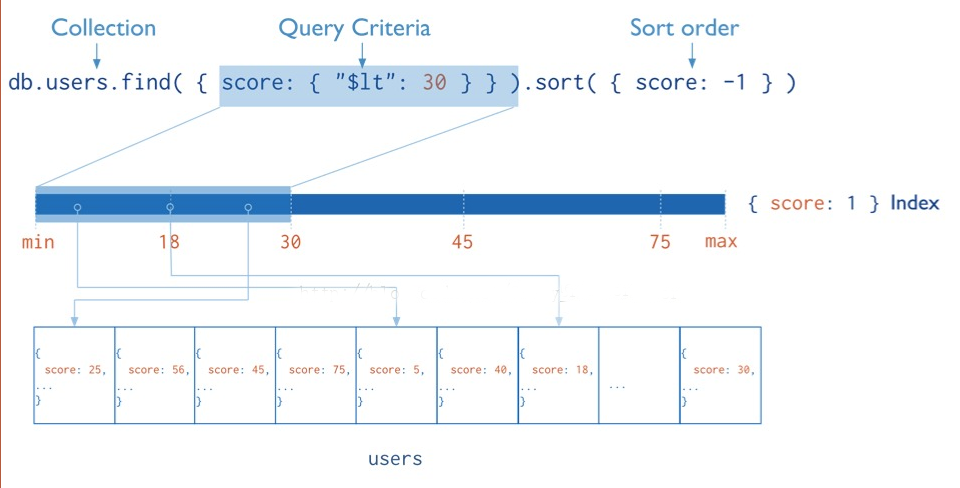

var students = [];
for(var i=1;i<=300000;i++){
students.push({name:'zfpx'+i,age:i,random:i});
}
db.students.insert(students);
db.students.find({age:299999}).explain(true);// "executionTimeMillis" : 245,
db.students.ensureIndex({age:1});
db.students.find({age:299999}).explain(true);// "executionTimeMillis" : 7,
db.students.ensureIndex({name:1},{name:'namedIndex'});
db.students.getIndexes()//查看索引
MongoDB 提供了一个 explain 命令让我们获知系统如何处理查询请求。利用 explain 命令，我们可以很好地观察系统如何使用索引来加快检索，同时可以针对性优化索引。
db.students.find({name:'zfpx150000'}).explain();
db.students.find({name:'zfpx299999',age:299999}).hint({name:1}).explain(true);
db.person.ensureIndex({ "name" : -1 },{ "name" : "indexname", "unique" : true,dropDups:true })
db.students.dropIndex('namedIndex');//删除指定的索引
db.students.dropIndex('*');
db.runCommand({dropIndexes:"students",index:"namedIndex"});//删除所有的索引
db.students.ensureIndex({name:1},{name:'nameIndex',unique:true,background:true});
mongodb可以自动对数组进行索引
db.students.insert({hobby:['basketball','football','pingpang']});
db.students.ensureIndex({hobby:1});
db.students.find({hobby:'football'},{hobby:1,_id:0}).explain(true);
查询的条件不止一个，需要用复合索引
db.students.ensureIndex({name:1,age:1});
db.students.find({name:1,age:2},{name:1,age:1,_id:0}).explain(true);
在一定的时间后会过期，过期后相应数据数据被删除,比如 session、日志、缓存和临时文件
db.stus.insert({time:new Date()});
db.stus.ensureIndex({time:1},{expireAfterSeconds:10});
db.stus.find();
大篇幅的文章中搜索关键词,MongoDB为我们提供了全文索引
db.article.insert({content:'I am a gir'});
db.article.insert({content:'I am a boy'});
db.article.find({$text:{$search:'boy'}});
db.article.find({$text:{$search:'girl'}});
db.article.find({$text:{$search:'boy girl'}});//多次查找，多个关键字为或的关系
db.article.find({$text:{$search:"a b"}});
db.article.find({$text:{$search:"boy -girl"}}); // -表示取消
db.article.find({$text:{$search:"a \"coco cola\" b "}}); //支持转义符的,用\斜杠来转义
mongodb提供强大的空间索引可以查询出一定落地的地理坐标
[{ gis : { x : 50 , y : 30 } ];
db.maps.ensureIndex({gis:'2d'},{min:1,max:3});
默认会创建一个2D索引
db.maps.find({gis:{$near:[1,1]}}).limit(3);
db.map.find({gis:{$within:{$box:[[1,1],[2,2]]}}},{_id:0,gis:1});
db.maps.find({gis:{$within:{$center:[[2,2],1]}}},{_id:0,gis:1});
对于普通查询，我希望看到stage的组合(查询的时候尽可能用上索引)：
不希望看到包含如下的stage：